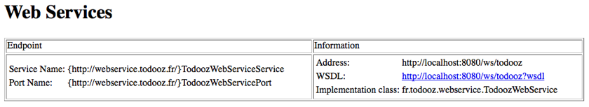

Java API for XML Web Services
Java API for XML Web Services
Introduction
La spécification JEE jax-ws permet de construire des services web SOAP.
Elle permet de faire des appels de méthodes distantes, comme ci (presque) elles étaient locales.
Il existe des frameworks antérieurs à jax-ws : ils sont similaires mais plus complexes à mettre en oeuvre.
La force de SOAP est l'interopérabilité : un client .NET peut parler à un serveur java.
Branche git
On crée la branche jax-ws à partir de la branche master.
> git checkout master Switched to branch 'master' > git checkout -b jax-ws Switched to a new branch 'jax-ws'
Metro
Metro est l'implémentation de référence pour les services web en java.
On commence donc par ajouter toutes les librairies à notre projet.
<dependency> <groupId>com.sun.xml.ws</groupId> <artifactId>jaxws-rt</artifactId> <version>2.2.5</version> </dependency>
Cela permet de récupérer metro et ses dépendances.
Hello world
Dans le package fr.todooz.webservice, on crée la classe TodoozWebService.
@WebService
@SOAPBinding(style = SOAPBinding.Style.RPC)
public class TodoozWebService {
public String hi(String name) {
return "Hello " + StringUtils.defaultIfEmpty(name, "unknown");
}
}
Pour metro, il faut un fichier sun-jaxws.xml dans src/main/webapp/WEB-INF
<?xml version="1.0" encoding="UTF-8"?>
<endpoints xmlns="http://java.sun.com/xml/ns/jax-ws/ri/runtime" version="2.0">
<endpoint name="TodoozWs" implementation="fr.todooz.webservice.TodoozWebService" url-pattern="/ws/todooz" />
</endpoints>
Et la déclaration du mapping dans le web.xml
<!-- Metro listener and servlet --> <listener> <listener-class>com.sun.xml.ws.transport.http.servlet.WSServletContextListener</listener-class> </listener> <servlet> <servlet-name>todoozWebService</servlet-name> <servlet-class>com.sun.xml.ws.transport.http.servlet.WSServlet</servlet-class> </servlet> <servlet-mapping> <servlet-name>todoozWebService</servlet-name> <url-pattern>/ws/todooz</url-pattern> </servlet-mapping>
Et si on démarre tomcat, le service répond sur http://localhost:8080/ws/todooz
En quelques lignes de configuration, nous avons mis en place notre service web.
Le WSDL http://localhost:8080/ws/todooz?wsdl est déjà très verbeux alors que notre service est simple.
Mais ce format apporte l'interopérabilité.
Le client
Nous allons mettre en place un test d'intégration qui va valider le bon fonctionnement de notre service.
Afin que jenkins n'éxécute pas ces tests avec les tests unitaires, nous pouvons :
- Placer ces tests dans un package fr.todooz.integration
- Exclure ce package lors des tests unitaires
<plugin> <groupId>org.apache.maven.plugins</groupId> <artifactId>maven-surefire-plugin</artifactId> <configuration> <excludes> <exclude>**/integration/*Test.java</exclude> </excludes> </configuration> </plugin>
On crée donc la classe TodoozWebServiceTest dans le package fr.todooz.integration de src/test/java.
Pour pouvoir appeler le webservice (présent dans le jdk), il nous faut générer un client à partir du WSDL.
On utilise l'outil wsimport qui permet cela. A la racine du projet :
> wsimport -s src/test/java -d target -p fr.todooz.integration.generated http://localhost:8080/ws/todooz?wsdl parsing WSDL... generating code... compiling code...
Les classes TodoozWebService et TodoozWebServiceService sont générées dans fr.todooz.integration.generated
Ce qui nous permet d'écrire et faire passer le test suivant.
@Test
public void hi() {
TodoozWebServiceService factory = new TodoozWebServiceService();
TodoozWebService webService = factory.getTodoozWebServicePort();
Assert.assertEquals("Hello jax-ws", webService.hi("jax-ws"));
}
Un peu de recul
La mise en place d'un web service est relativement aisée.
En quelques manipulations, on appelle un service distants.
Coté client on repose sur de la génération de code, ce qui rend notre client fragile face à une évolution de l'api.
Les types des paramètres et les types de retour des méthodes font également partie de l'api. On a donc souvent des classes spécialisées juste pour le webservice.
Le point positif est que notre service est accessible depuis beaucoup de languages.
La liste des tâches
Nous souhaitons maintenant faire quelque chose d'un peu plus utile : exposer la liste des tâches.
On aimerait reposer sur le TaskService et écrire :
public List<Task> getTasks() {
return taskService.findAll();
}
Cependant, comment obtenir une référence vers le TaskService de notre application ?
Spring dispose d'un support pour les services web permettant l'injection des dépendances
Avec le support spring, on peut écrire :
@WebService
@SOAPBinding(style = SOAPBinding.Style.RPC)
public class TaskWebService extends SpringBeanAutowiringSupport {
@Inject
private TaskService taskService;
public List<Task> getTasks() {
return taskService.findAll();
}
}
Cependant, si on relance le tomcat, on obtient l'erreur :
...
Caused by: java.security.PrivilegedActionException: com.sun.xml.bind.v2.runtime.IllegalAnnotationsException:
2 counts of IllegalAnnotationExceptions
java.util.List is an interface, and JAXB can't handle interfaces.
this problem is related to the following location:
at java.util.List
...
JAXB est la librairie qui transforme les objets java en xml.
Visiblement JAXB n'accepte pas une interface comme type de retour de notre méthode.
Une solution possible est d'utiliser une classe de wrapping afin que la signature de notre méthode soit :
public Tasks getTasks() {
return new Tasks(taskService.findAll());
}
Et donc la classe en question.
public class Tasks {
private List<Task> tasks;
public Tasks() {
}
public Tasks(List<Task> tasks) {
this.tasks = tasks;
}
public List<Task> getTasks() {
return tasks;
}
public void setTasks(List<Task> tasks) {
this.tasks = tasks;
}
}
Et cette fois tomcat démarre.
En regénérant le client du service web, on peut écrire le test suivant :
@Test
public void getTasks() {
TodoozWebServiceService factory = new TodoozWebServiceService();
TodoozWebService webService = factory.getTodoozWebServicePort();
Assert.assertTrue(webService.getTasks().getTasks().size() > 0);
Assert.assertTrue(webService.getTasks().getTasks().get(0).getTitle().length() > 0);
}
Malheureusement, ce test échoue avec l'erreur suivante :
java.lang.NullPointerException
at fr.todooz.webservice.TodoozWebService.getTasks(TodoozWebService.java:24)
at sun.reflect.NativeMethodAccessorImpl.invoke0(Native Method)
at sun.reflect.NativeMethodAccessorImpl.invoke(NativeMethodAccessorImpl.java:39)
...
Malgré nos efforts, le TaskService n'est pas correctement injecté dans notre service web.
context spring père
L'explication est un peu technique et est liée au fonctionnement des contextes spring dans un environnement web.
Pour corriger cela, le plus simple est de rajouter les lignes suivantes dans le web.xml :
<listener> <listener-class>org.springframework.web.context.ContextLoaderListener</listener-class> </listener> <context-param> <param-name>contextConfigLocation</param-name> <param-value>WEB-INF/spring-context.xml</param-value> </context-param>
Et de copier le fichier WEB-INF/spring-servlet.xml vers WEB-INF/spring-context.xml
Cette fois, le test passe.
- Un contexte père construit par le ContextLoaderListener
- Un contexte fils par servlet spring définie dans le web.xml
Un contexte fils attaché à une servlet n'est accessible que pour les requêtes qui traversent cette servlet.
Dans notre cas, afin d'avoir accès au TaskService pour des requêtes passant par la WSServlet (/ws/todooz), il faut que le service soit défini dans le contexte père ou dans le contexte lié à cette servlet.
La bonne pratique est la suivante :
Définir les services dans le contexte global (ContextLoaderListener)
Ce qui est spécifique à une servlet spring (controllers, localeResolver, viewResolver...) dans le contexte associé à la servlet.
Actuellement, nos beans sont déclarés en double, ce qui n'est pas correct.